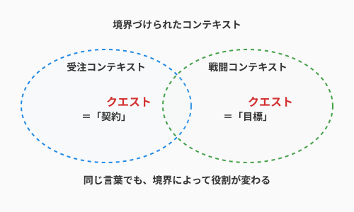

1.6 【外伝】言葉の壁を越えて——ドメイン翻訳とバベルの塔

導入: 同じ言葉、違う意味
「クエストのステータスを更新しました」
開発者がそう言ったとき、受付の職員（営業担当）は「報酬の支払いが完了した」と思い、冒険者（ユーザー）は「次の目的地が表示された」と思い、データベース管理者（DBA）は「行の更新フラグが立った」と思います。
一つの言葉が、立場によって異なる魔法の効果を持ってしまう——。これは現代のプロジェクトにおいて、混乱と失敗を招く「バベルの塔」の呪いです。本節では、ドメイン駆動設計（DDD）の重要な知恵である「ユビキタス言語」を使い、この呪いを解く翻訳の技術を学びます。
共通言語の錬成：ユビキタス言語
私たちは、技術用語だけで世界を語ろうとしてはいけません。また、ユーザーの言葉を鵜呑みにしてそのままコードに反映させるのも危険です。
大切なのは、開発者とドメインエキスパート（現場の専門家）が、対話を重ねて「共通の魔法言語（ユビキタス言語）」を錬成することです。
- 不適切な言葉:
UpdateStatusRequest,process_flag - ユビキタス言語:
クエスト受注,報酬確定,冒険失敗
コードの中に、現場のプロが使う言葉がそのまま息づいている状態。それが、認識のズレという魔物を寄せ付けない最強の結界になります。
境界を引く：限定されたコンテキスト
一つの巨大な塔を建てるのではなく、役割ごとに「領地（コンテキスト）」を分けることも重要です。

- 受注コンテキスト: 「クエスト」は、契約と条件の象徴。
- 戦闘コンテキスト: 「クエスト」は、敵と報酬の象徴。
同じ言葉でも、コンテキスト（文脈）が変われば、その役割も変わります。これを無理に一つにまとめようとせず、「境界づけられたコンテキスト（Bounded Context）」として整理することで、大規模なシステムの複雑さを制御できます。
まとめ
- 言葉の純度を高める: 技術用語に逃げず、ドメインの言葉で語る。
- 対話という儀式: 言葉の定義を曖昧にせず、常に全員で合意を取る。
- 地図を分ける: コンテキストごとに境界を引き、言葉の衝突を防ぐ。
正しい言葉は、正しい設計を導きます。あなたのチームだけの「聖なる辞書」を編み上げましょう。
さらに学ぶためのリソース
- 📚 書籍: エリック・エヴァンス『ドメイン駆動設計』（ユビキタス言語や境界づけられたコンテキストの原典）
- 📚 書籍: ヴォーン・ヴァーノン『実践ドメイン駆動設計』（DDDをより実践的に適用するためのガイド）
- 📄 論文: Eric Evans "Ubiquitous Language"（提唱者によるユビキタス言語の解説）
AIへの詠唱例
私たちのプロジェクトには「[役割A]」と「[役割B]」という2つのステークホルダーがいます。
「[特定の用語]」という言葉について、それぞれの立場から見た定義と期待する挙動の違いを分析し、
全員が納得できる「共通言語」の案を提示してください。